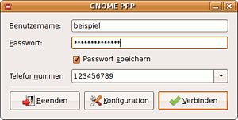
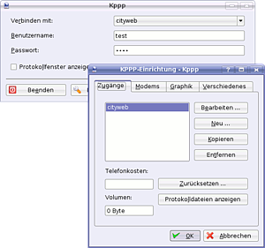

Einwahlprogramme
Dieser Artikel wurde für die folgenden Ubuntu-Versionen getestet:
Ubuntu 16.04 Xenial Xerus
Ubuntu 14.04 Trusty Tahr
Zum Verständnis dieses Artikels sind folgende Seiten hilfreich:
 In Zeiten des Internets über schnelle Breitbandverbindungen mag der Internet-Zugang über ein Modem manchen überflüssig erscheinen. Aber es gibt abseits der Ballungsräume nach wie vor Gegenden, in denen weder DSL, UMTS noch LTE verfügbar ist. Hier ist ein Modem unter Umständen die einzige, wenn auch sehr langsame Lösung.
In Zeiten des Internets über schnelle Breitbandverbindungen mag der Internet-Zugang über ein Modem manchen überflüssig erscheinen. Aber es gibt abseits der Ballungsräume nach wie vor Gegenden, in denen weder DSL, UMTS noch LTE verfügbar ist. Hier ist ein Modem unter Umständen die einzige, wenn auch sehr langsame Lösung.
Zum Thema ISDN siehe ISDN-Karten.
Hinweis:
Die Pflege einer installierten Ubuntu-Version (Sicherheitsaktualisierungen) ist mit einem reinen Modem-Zugang aufgrund der anfallenden Datenmenge praktisch nicht (mehr) sinnvoll möglich. Es dauert sehr lange, auch nur kleine Sicherheitsupdates mit ein paar Megabyte herunterzuladen, ist aber dennoch mit entsprechendem Zeitaufwand möglich.
Modem installieren¶
Serielle Modems¶
Externe Modems, die über die serielle Schnittstelle an den Rechner angeschlossen sind, funktionieren in der Regel sofort. Die serielle Schnittstelle wird über das Gerät /dev/ttySx angesprochen. Unter Windows lauten die Bezeichnungen "COM1", "COM2" usw. Diese entsprechen unter Linux "/dev/ttyS0", "/dev/ttyS1" usw. Wird ein serielles Modem beim Start des Rechners erkannt, wird es automatisch mit dem Gerät "/dev/modem" verlinkt. Für Modems, die über die serielle Schnittstelle angeschlossen sind, brauchen keine zusätzlichen Softwarepakete installiert zu werden.
Soft- bzw. Winmodems¶
Ist der Modem in den Rechner eingebaut oder per USB angeschlossen, handelt es sich oft um ein Softmodem oder Winmodem, die unter Linux häufig nicht funktionieren. Dies sind spezielle Modems, die z.B. die Soundkarte des Rechners benutzen, um die für die Modulation und Demodulation benötigten akustischen Signale zu erzeugen. Es gibt jedoch auch USB-Modems, die ohne extra Treiber mit Linux funktionieren, weil der Kernel eine virtuelle serielle Schnittstelle installiert (meist /dev/ttyACM0, manchmal auch /dev/ttyUSB0).
Für manche Chipsätze bzw. einige wenige ausgewählte Notebooks existiert ein Treiber, den man über die Paketverwaltung installieren kann. Informationen hierzu findet man unter SmartLink im Wiki. Dieser Treiber lässt sich auch recht komfortabel über den restricted-manager (auch jockey oder Verwaltung eingeschränkter Treiber genannt) installieren. Am besten, man informiert sich vor dem Modem-Kauf auf den Seiten des Herstellers oder in Diskussionsforen, ob der Modem unter Linux funktioniert.
Verbindung einrichten¶
Wenn der Modem erkannt wurde, kann im Regelfall der bei allen Ubuntu-Varianten vorinstallierte Network-Manager benutzt werden.
GNOME PPP¶

Alternativ kann man das Programm GNOME PPP nutzen. Dazu muss das folgende Paket hinzugefügt [1] werden :
gnome-ppp (universe)
 mit apturl
mit apturl
Paketliste zum Kopieren:
sudo apt-get install gnome-ppp
sudo aptitude install gnome-ppp
Anschließend kann man das Programm bei Ubuntu-Varianten mit einem Anwendungsmenü über den Eintrag "Internet -> GNOME PPP" starten. Hier können nun die Einwahldaten des Internetproviders eingetragen werden. Unter "Konfiguration" können zahlreiche Einstellungen vorgenommen werden.
KPPP¶

Auch in der Desktopumgebung KDE gibt es ein Programm zur Verwaltung des Modems. Will man das Programm nutzen, muss man das folgende Paket installieren:
kppp (universe)
mit apturl
Paketliste zum Kopieren:
sudo apt-get install kppp
sudo aptitude install kppp
Nach erfolgreicher Installation lässt es sich im K-Menü via "Internet -> KPPP (Einwahl ins Internet)" starten. Über "Einrichten" kann man verschiedene Anbieter definieren, unterschiedliche Modems anlegen und viele weitere Einstellungen vornehmen.
Problembehebung¶
Fehlermeldung "NO CARRIER"¶
Wenn der Modem erkannt wird, aber beim Verbindungsversuch die Meldung No carrier signal detected ausgegeben wird, kann es helfen, in der versteckten Datei ~/.wvdial.conf folgenden Eintrag [4] hinzuzufügen:
carrier check = off
Verbindungsabbruch nach einigen Sekunden¶
Wenn die Modemverbindung erfolgreich aufgebaut, aber nach wenigen Sekunden wieder abgebrochen wird, kann das daran liegen, dass eine zu niedrige Leerlaufzeit eingestellt ist. In diesem Fall sollte man eine höhere Leerlaufzeit angeben. Das kann mit folgendem Eintrag in der Datei ~/.wvdial.conf erfolgen [4]:
idle seconds = 300
300 (Sekunden) bedeutet hier, dass nach 5 Minuten Leerlauf die Verbindung automatisch getrennt wird. Diese Zahl muss natürlich den eigenen Wünschen angepasst werden, denn bei Modemverbindungen muss man meist auch die Leerlaufzeit bezahlen.
 Übersichtsartikel
Übersichtsartikel- Erstellt mit Inyoka
-
 2004 – 2017 ubuntuusers.de • Einige Rechte vorbehalten
2004 – 2017 ubuntuusers.de • Einige Rechte vorbehalten
Lizenz • Kontakt • Datenschutz • Impressum • Serverstatus -
Serverhousing gespendet von